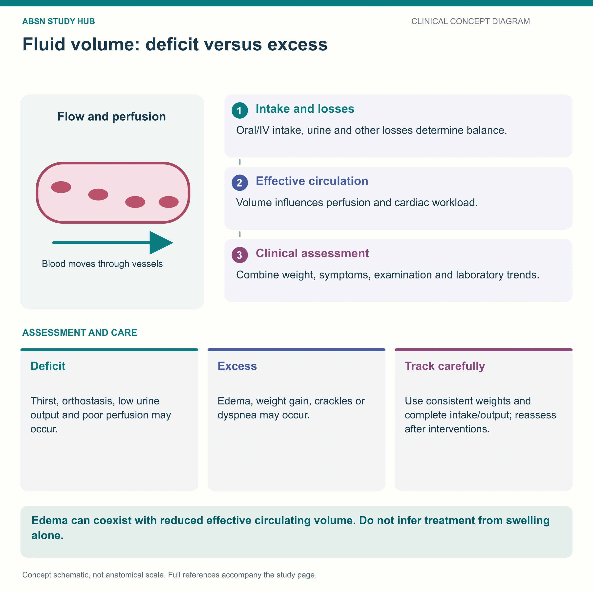

Where body water lives · how it moves · who controls it
Water is not stored in one bucket — it lives in three. Two-thirds sits inside your cells; one-third sits outside them, and that outside third is split between the space around cells and the blood vessels. Every fluid disorder you will ever be tested on is just water moving between those three tanks.
📄 Simple Nursing original — opens in Drive →
Learn the three tanks and the doors between them — then every fluid problem is just “which way is the water going?”
ICF ⅔ · ECF ⅓ · and ECF splits ¾ interstitial / ¼ intravascular. In a 70 kg adult that is roughly 42 L of water total.

Water crosses the capillary wall by pressure (filtration & reabsorption) and crosses the cell membrane by osmosis. Sodium stays outside, potassium stays inside — water chases sodium.
Main cation: sodium Na⁺; main anion Cl⁻.
Diffusion — solutes move from greater to lesser concentration until equal.
O₂ & CO₂ swapping in the lungs
Osmosis — water moves from lower to higher solute concentration.
large intestine reabsorbing water
Filtration — both fluid and solutes, from high hydrostatic pressure to low.
the glomerulus filtering blood
🔋 Active transport is the fourth: it burns ATP to push ions against their gradient. The sodium–potassium pump shoves 3 Na⁺ out for every 2 K⁺ in — that pump is the whole reason Na⁺ is an outsider and K⁺ an insider.
Osmolality = the concentration of a solution. High osmolality = more solute, heavier, thicker. Low osmolality = fewer solutes, lighter, more dilute.
Normal serum osmolality: 275–295 mOsm/kg (adult reference range). Sodium is the biggest driver — a quick bedside estimate is 2 × Na⁺.
Read those scales like a see-saw: too much water pushes every one of them LOW (diluted). Too little water pushes every one of them HIGH (concentrated).
Roughly 2,500 mL in, roughly 2,500 mL out. When the two columns stop matching, the patient's weight tells you first.
Skin and lung losses are insensible — you cannot measure them, but they climb fast with fever, tachypnea, diaphoresis, burns and open wounds.
1 kg = 1 L = 2.2 lb of fluid. A scale catches fluid changes that I&O charting misses.
Minimum acceptable urine output: 30 mL/hr — about 0.5 mL/kg/hr in an adult.
Under 30 mL/hr = oliguria. Think: not enough volume reaching the kidney, or the kidney itself is failing. Never “just keep watching” two hours of oliguria — report it.
INTAKE: oral liquidsice chips (count ½ the volume)soup, gelatin, ice cream, popsiclesIV fluids & IV medstube feeds + flushesirrigants that stay in
OUTPUT: urineemesisdiarrhea / liquid stoolNG & other suctionsurgical drainswound & fistula drainageblood loss
Anything liquid at room temperature is intake. A cup of gelatin is fluid, not food.
Fluid leaves the vessels and gets trapped in a space that does no work: the abdomen (ascites), the gut lumen, the pleural space, or burned tissue.
Four hormones and one thirst center. Two of them HOLD water, one DUMPS it — that is the whole control panel.
Too much ADH = SIADH → holds water, dilute blood, low Na⁺. Too little ADH = diabetes insipidus → dumps water, huge pale urine output, high Na⁺.
Too much = Conn's / hyperaldosteronism → hypertension + hypokalemia. Too little = Addison's → hypotension, hyperkalemia, salt craving.
Osmoreceptors in the hypothalamus fire when serum osmolality rises by only a small amount — you feel thirsty, you drink, osmolality falls.
| Hormone | From | Fires when… | Does what |
|---|---|---|---|
| ADH 💧 | Posterior pituitary | Serum osmolality HIGH (too salty) or volume low | Reabsorbs water → concentrated urine, more volume |
| Aldosterone 🧂 | Adrenal cortex | Angiotensin II, low volume, high K⁺ | Na⁺ + water in, K⁺ out → more volume, lower K⁺ |
| Renin / Ang II 🔗 | Kidney / lungs (ACE) | Low renal perfusion or BP | Vasoconstricts and triggers aldosterone |
| ANP / BNP 🫀 | Atria / ventricles | Heart chambers overstretched | Dumps Na⁺ & water, vasodilates, blocks RAAS + ADH |
| Thirst 🥤 | Hypothalamus | Osmolality rises / volume falls | Makes you drink — unreliable in the very old & very young |
These newly drawn concept diagrams consolidate the retired illustration sets. The accompanying study notes and original handout links remain on this page.